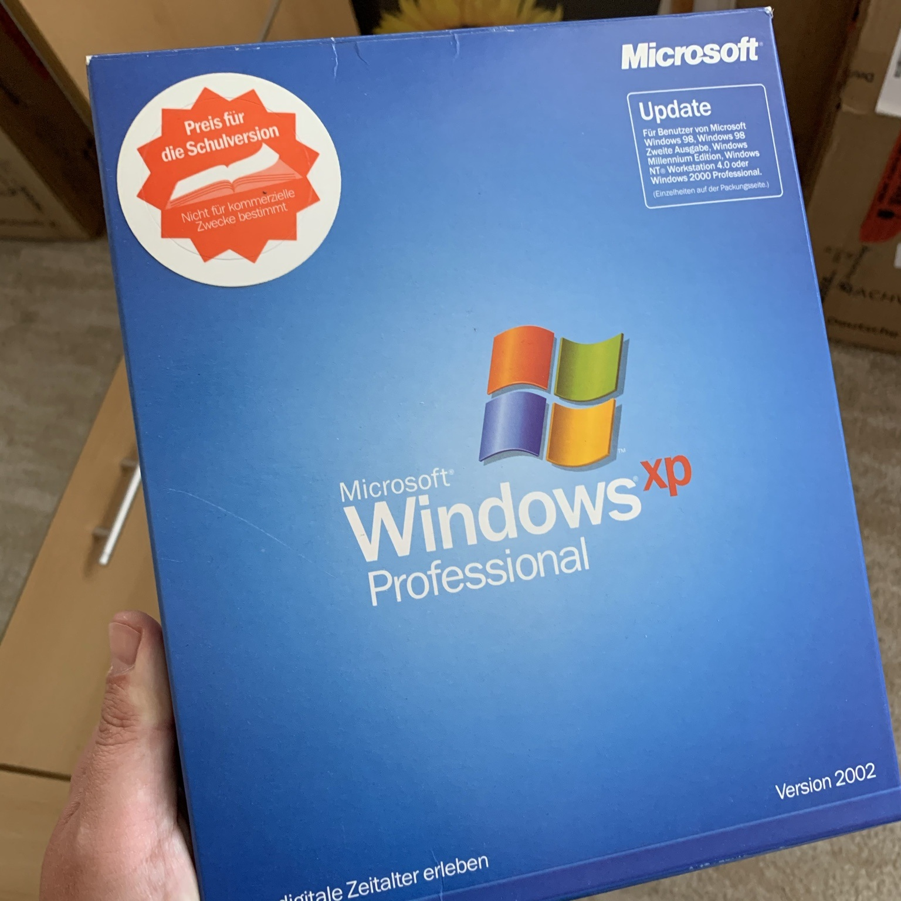
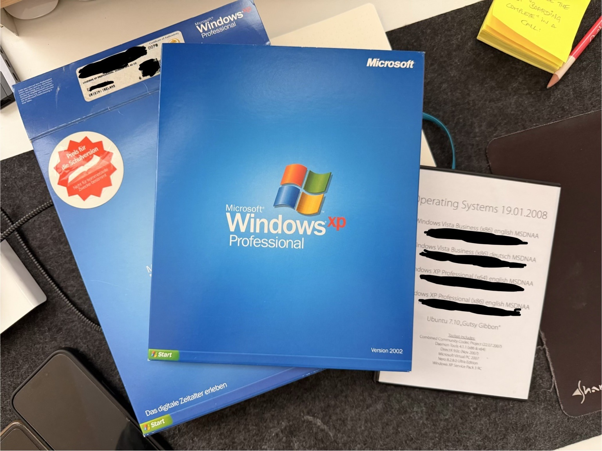
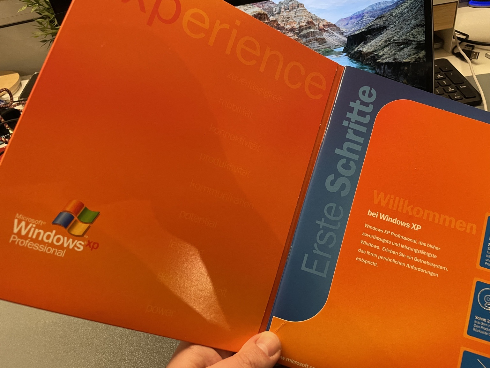
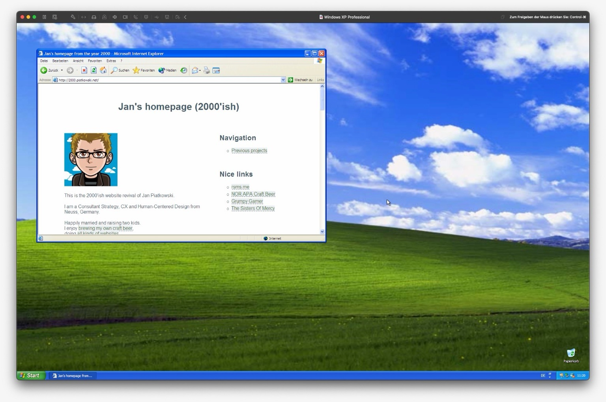
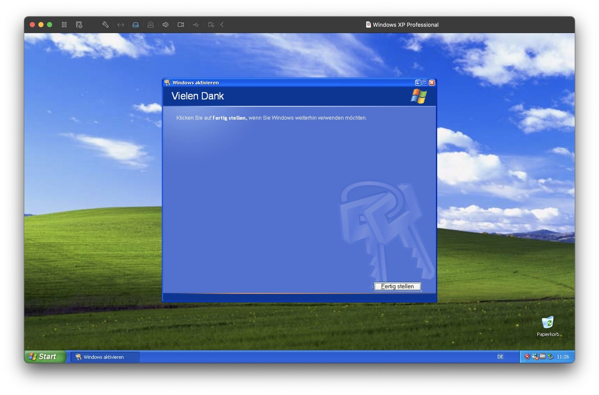
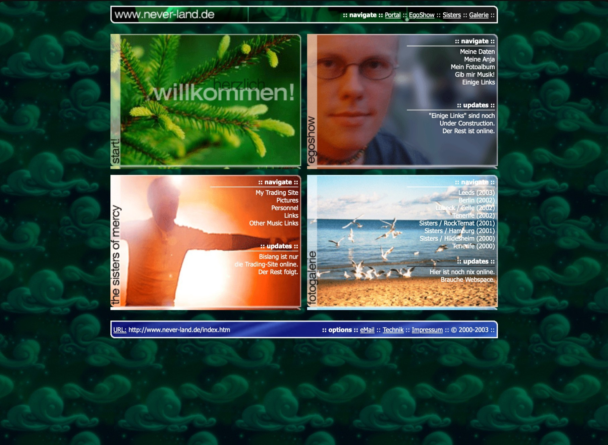

25 October 2001. Microsoft released Windows XP. A quarter of a century later, I still have the original retail packaging sitting on my desk. We had two copies of Windows XP Professional as upgrade editions, with Windows 98 OEM as the starting point. Big blue boxes, installation CDs, printed documentation and an almost ridiculously orange welcome folder.






Back when software was something you could actually unwrap.
And here I am, 25 years later, running Windows XP in a virtual machine, opening Internet Explorer and browsing a revival of my own website from around the year 2000.


Time flies. But some things bring it all back in an instant.
From functionality to experience
Looking back, I consider Windows XP a fairly radical turning point in Microsoft's approach to personal computing.
Windows 95 had already made an enormous leap towards the everyday user. The Start menu, taskbar and desktop metaphor helped make PCs more approachable. Yet Windows 95, 98, 2000 and the rather unfortunate Millennium Edition still felt predominantly technical and functional.
They were operating systems. They did their jobs. Sometimes remarkably well, sometimes rather less so.
Windows XP felt different.
The name itself said it all: XP stood for Experience.
Suddenly, Windows was colourful, rounded, welcoming and almost playful. The blue Luna interface, that unmistakable green Start button, friendly icons, redesigned navigation and the now legendary Bliss wallpaper all contributed to an entirely different atmosphere.
Microsoft wasn't merely dressing up an existing interface. It was trying to change how people felt about using their computers.
And while some found Luna a little too colourful, even childish, I think Microsoft understood something important: usability doesn't have to be visually austere. Functionality and delight aren't mutually exclusive.
There was genuine joy in interacting with Windows XP.


2001: The year operating systems discovered their personality
Interestingly, Microsoft wasn't alone.
Earlier that year, Apple had released Mac OS X, introducing its remarkable Aqua interface. Where Microsoft embraced bold colours, soft gradients and friendly shapes, Apple explored translucency, depth, reflections and almost tactile controls.
Two very different visual languages, yet remarkably similar ambitions.
Neither company invented user-centred design in 2001, of course. Both had decades of interface design behind them. But XP and OS X represented a new level of consistency and intent.
The operating system was becoming more than a collection of windows, menus and dialogue boxes. It was becoming a coherent experience, with its own visual language, behaviour and personality.
In retrospect, I see both as important milestones in the evolution of modern design systems.
You can trace that development through Microsoft's Aero Glass in Windows Vista and Windows 7, Apple's increasingly skeuomorphic approach culminating in iOS 6, the radical minimalism of Metro in Windows 8, and eventually Microsoft's Fluent Design language.
Different philosophies, different fashions, sometimes questionable decisions. But the underlying ambition remained: creating a recognisable, consistent experience across an increasingly complex digital environment.
Windows XP and Mac OS X made that ambition particularly visible.
The operating system of a changing internet
But my memories of XP go far beyond its appearance.
Windows XP, particularly alongside Office 2003 and countless games, became a faithful companion for years. And those years happened to coincide with one of the most fascinating transformations in the history of the internet.
Remember the web around 2000?
Much of it was still a collection of relatively static websites. Personal homepages, guestbooks, link directories, forums and the occasional animated GIF. Publishing something online was an achievement in itself.
Then everything started moving.
Peer-to-peer file sharing was exploding. eDonkey2000, eMule and BitTorrent changed how people discovered and exchanged digital content. Whether the entertainment industry liked it or not, these networks demonstrated an entirely different approach to distribution.
And suddenly, ordinary users weren't just consuming content. They were participating in its distribution.
Meanwhile, communities were evolving beyond traditional discussion forums. MySpace, Facebook and platforms such as uboot.com introduced new ways of representing ourselves online, connecting with others and sharing parts of our lives.
We created profiles, uploaded photographs, discovered music, joined discussions and made friends with people we'd never met.
The boundaries between publishing, communicating and consuming were beginning to dissolve.
Gaming underwent an equally significant transformation. Valve launched Steam in 2003, and the release of Half-Life 2 in 2004 helped demonstrate that digital distribution, online activation and continuously updated software were becoming a new reality.
Not everybody welcomed it at the time.
But the foundations of today's digital ecosystems were being laid right in front of us.
And very often, Windows XP was the operating system through which we experienced it all.
More than just a pretty desktop
There was something else beneath that colourful surface.
By bringing the Windows NT architecture to mainstream home users, Microsoft effectively reunited its professional and consumer operating systems on a more robust technical foundation.
Compared with Windows 98 and Me, the improvements in stability, networking and general reliability were substantial.
This mattered.
As broadband connections became commonplace, computers increasingly turned into permanently connected devices. We downloaded, uploaded, shared, played, communicated and collaborated.
The PC was no longer simply a machine for running local applications. It was becoming our gateway to a connected world.
Windows XP didn't invent that world, nor did it create the underlying architecture of the internet. But it provided a remarkably enduring desktop platform during its transformation.
Of course, it wasn't all sunshine and green hills.
There were security vulnerabilities, malware, dubious downloads, driver problems and the occasional spectacular crash. Service packs became essential survival equipment.
It was a wild time.
But it was also a time when the digital world felt wonderfully unfinished.
We were pioneers
Perhaps that's what I remember most fondly.
The early 2000s weren't defined by perfectly polished platforms and carefully optimised user journeys. The internet was still something we explored, experimented with and, occasionally, broke.
We built websites because we could. We joined communities simply to see what might happen. We discovered new ways of distributing music, software and information, often long before the industries involved had figured out their business models.
There was curiosity, chaos, creativity and an extraordinary sense of possibility.
I remember developing the very foundations of this website back in 2001 and 2002.


There were fewer ready-made solutions, fewer established patterns and certainly fewer expectations about what a personal website should look like.
You had to figure things out for yourself. Sometimes with questionable HTML, improvised graphics and layouts that would make today's accessibility experts shudder.
But it was ours.
A personal homepage wasn't simply another standardised presence on a platform. It was an individual digital expression of who we were, what interested us and how we wanted to be seen.
Not necessarily better designed. Not necessarily easier to use. But somehow more personal.
We didn't call everything an ecosystem. We didn't measure every interaction. We certainly didn't discuss customer experience, service design or design systems in the way we do today.
We were just figuring things out.
And yes, in many ways, we were pioneers.
The internet grew up. Perhaps a little too much.
Twenty-five years later, the internet is a very different place.
We still explore, of course. We still create, discover and connect. In many ways, we have more possibilities than ever before.
But the internet has grown more serious.
More commercial. More consolidated. More optimised.
What once felt like an enormous, wonderfully chaotic playground has gradually become a collection of professionally managed platforms, recommendation algorithms, commercial interests and carefully designed conversion funnels.
There are obvious advantages to that transformation. Services are easier to use, publishing has become accessible to almost everyone, and technologies that once required considerable effort are now available at the touch of a button.
We've gained convenience, reliability and reach.
But perhaps we've lost some of the curiosity, individuality and freedom that made the early internet so exciting.
Not because creativity has disappeared. Far from it.
Rather, because so much of our digital expression now happens within environments designed by someone else.
And then, quite unexpectedly, artificial intelligence entered the picture.
A strange new kind of digital frontier
AI presents us with a fascinating contradiction.
On the one hand, we're witnessing an almost industrial production of digital mediocrity. Endless AI-generated images, synthetic articles, recycled ideas and increasingly indistinguishable content flooding our feeds.
The internet has acquired a new problem: creating content has become easier than deciding whether that content is worth creating in the first place.
AI slop, as we've rather appropriately come to call it.
And yet, at exactly the same time, AI is opening doors that remind me remarkably of those early days of the web.
Ideas that once required extensive technical knowledge, specialist software or weeks of development can suddenly become working prototypes in hours.
We can experiment with interfaces, develop applications, build interactive experiences, explore unfamiliar technologies and bring ideas to life with a speed that would have seemed extraordinary in 2001.
The barriers between imagination and execution are becoming smaller.
And for someone who spent those early internet years experimenting with personal websites, software and digital experiences, that feels strangely familiar.
The tools are radically different. The opportunities are vastly greater. But the excitement of asking “What if I tried this?” is very much the same.
Perhaps that's the real opportunity of AI.
Not simply to produce more content, faster. Not to replace curiosity with automation.
But to give curiosity an entirely new set of tools.
We have the means to make the internet more generic than ever before — and, paradoxically, more personal than ever before.
Which direction we choose is ultimately up to us.
Still exploring
Twenty-five years after Windows XP arrived, I'm looking at its familiar blue taskbar, green Start button and rolling hills.
And I'm browsing a version of my own website that takes me back to where much of this began.
There's a certain irony in that.
The technology is obsolete. The browser belongs in a museum. The operating system has long since been replaced.
Yet the motivation behind opening that browser hasn't changed all that much.
I still want to explore. To experiment. To build things simply because an idea sounds interesting.
Windows XP accompanied us through a period when computers became friendlier, the internet became social, and digital experiences began to shape everyday life.
Today, a new generation of technologies is challenging us to rethink what we can create, how we create it and what makes a digital experience meaningful.
Perhaps the most important lesson from those early years isn't about technology at all.
It's about remembering that the internet was never meant to be merely something we consume.
It was something we could shape.
And it still is.
Happy 25th birthday, Windows XP.
And thanks for the memories.